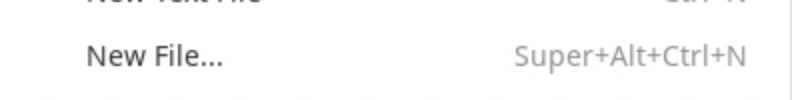
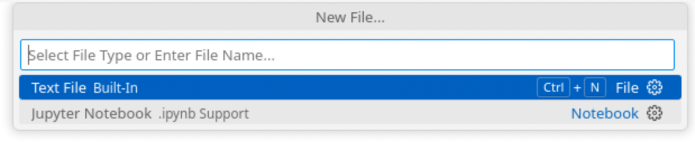
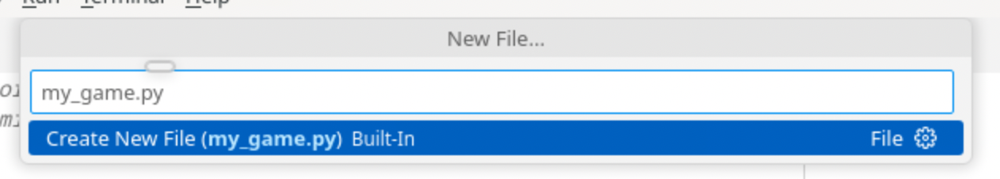
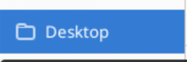
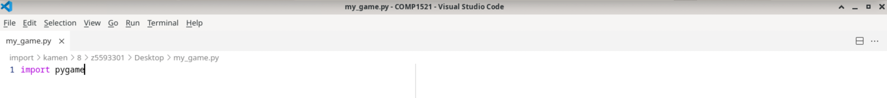
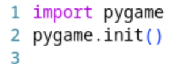

Task 1: Set Up
Goal: Create a file and initialise pygame.
Task 1.1: Make Python File
Now that you have VS Code open, it’s time to create your Python file!
In VS Code, click on File

and then New File... 
You should see something like this pop up after you cilck 'New File' 
Enter the name of your file (e.g. 'my_game.py')

NOTE: It’s super important to include **`.py`** at the end of the file name so VS Code knows it's Python code!
Press 'ENTER' and something looks like this should pop up

Press 'Desktop' and then 'Create File' to save your file to the Desktop 

AND NOW YOU HAVE CREATED YOUR PYTHON FILE!!! YOU CAN START CODING

Task 1.2: Import Pygame
Now that you have created your Python file, it's time to start setting it up for Pygame!
Step 1: Import the Pygame Module
At the very top of your Python file, you need to import the Pygame library.
Type this line at the very top of your file:
import pygame
This command loads the Pygame tools into your file, so you can use them for your game!
You should now see something like this:
Step 2: Initialise Pygame
Before we can use any Pygame features (like drawing things and moving characters), we need to initialise it.
Initialising Pygame gets everything ready behind the scenes.
Right underneath your import pygame line, type:
pygame.init()
pygame.init() starts up all the Pygame systems like sound, graphics, timing, etc.
You should now see something like this:

Task 2: Creating a game screen
Goal: Create a visible game screen with a background, title, icon and a game loop.
Task 1.1: Create Game Screen
Before we make our game we need to set up the screen to display it!
-
Make a screen that is 800 pixels wide and 600 pixels tall
For example: To make a screen that is 100 pixels wide and 200 pixels tall you could use this code
WIDTH = 100 HEIGHT = 200
- Create a window** of that size using the Pygame function
pygame.display.set_mode()
YOU CANNOT SEE YOUR SCREEN YET
You must complete Task 1.2 first BEFORE YOU CAN SEE A SCREEN WHEN YOU RUN YOUR PYGAME!
Checkpoint
- Two variables for width and height
- A screen object created using Pygame and your variables
Task 1.2: Create Game Loop
- Use a variable called
runningand set it to True at the start - Then you need a while loop which keep looping while the game is running.
- Inside your
while running:loop, you need to check what the player is doing.Hint:
- Use
for event in pygame.event.get(): - Go through all the events (like mouse clicks, window close, etc.)
- If the player close the game (event.type == pygame.QUIT`), you need to stop the loop!
- Use
- At the end of your while loop, refresh the screen with
pygame.display.update()
Checkpoints
- No crashing! Your window should stay open until you click the X!
-
You should see something like this:

Task 1.3: Add Background Image
- First save the image path as a variable: e.g.
background_image = "images/background/wooden_floor.jpeg" - Then load it using
pygame.image.load(background_image) - make sure the background fits the window Use
pygame.transform.scale(...) - draw the background onto the screen use
screen.blit(...)
Checkpoints
-
A
background_imagevariable (path to the image) -
A
backgroundvariable (the scaled loaded image) -
A
screen.blit(variable, coordinate)line inside yourwhile running:loop - A background showing up instead of a black screen!
Task 1.4: Add a Game Title and App Icon
- Change the text that appears at the very top of your game window use a Pygame function
pygame.display.set_caption(). - load an image using
pygame.image.load(...) - use Pygame function
pygame.display.set_icon()to set the image. - The path to your icon should be something like this: "images/game_icon.png"
Checkpoints
-
Have your customised game title
-
Have your customised icon
Task 3: Making a player
Goal: Make a player that can move and be seen on the screen.
Task 2.1 Create a player class
Your task is to create a player class with the following properties
- name
- image
- sprite
- position_x
- position_y
Task 3.2: Create an instance of player
Your task is to create an instance of the player class.
Hint: something = ClassName()
Doing so will call the __init__(self, ...) method of the class.
Now, thinking back to yesterday, how might we access the variables of this class?
Task 3.3: Create the draw method
Under the player method, we need to create a draw method(). How might we create a method inside a class? If you are stuck have a read here.
Perhaps the screen.blit(...) function could be useful...
Now, in order for the player position to be updated very often, where would we call this draw method?
Task 3.4: Create the move method
Your task is to create the move method.
Task 2.4.1
First, you need to find whether a certain key is being pressed or not. Similar to yesterday, we can use a function called pygame.key.get_pressed().
Hint: This returns a list of booleans.
For example, the return value may look something like this
-> [False, False, False, False, True, False, False]
How might we check whether the 7th key is pressed?
Task 2.4.2
Secondly, we need to update the position_x and position_y variables of our player according to what key was pressed.
For example, something like
if w is pressed
move up
else if a is pressed
move left
else if s is pressed
move down
else
move right
Task 2.4.3
Add player.move() and player.draw() to the game loop.
Task 3.5: Fix duplicating Poco
We’re going to fix the trailing images issue by re-drawing the background to the screen every time the game loops.
- Draw the background to the screen again inside the game loop before drawing the bird.
That fixed it!
Task 4: Adding other entities
Goal: Add multiple entities that are related to each other. In this example we have added food, but you are free to add what you wish, as long as it is appropriate.
- Inside your
Foodclass, create a special function called__init__.
Hints:
- Use the
defkeyword to define the method. - The
__init__method should accept 4 inputs:nameimageposition_xposition_y
- Save each of these inputs into the object using
self.
-
Inside your
__init__()method, set a default size for your food. -
Still inside the
__init__()method, load the image file using Pygame'simage loadfunction. -
Scale the loaded image to the correct size using Pygame's
transform scalefunction. -
Save the final scaled image into the object (e.g.,
self.sprite).
Checkpoints
-
A
Foodclass (or a class of things you want to have) -
An
__init__()method that:- Saves the name, image, and position
- Sets a default size
- Loads and scales the sprite
-
A ready-to-use object for your game!
Task 3.2: Create a Food Dictionary
- Create a dictionary called
foods, this dictionary will hold all the food items you want to appear in your game.Hint:
- Use curly braces
{}to create a dictionary. - Save it in your main code before your game loop starts.
- Use curly braces
- Inside your dictionary, add entries for each food you want
- Each key should be the name of the food (like
"banana","grapes", etc.). - Each value should be a list that contains:
- The path to the image file
- The x position
- The y position
Hint for structure:
"food name": ["path/to/image.png", x_position, y_position] - Each key should be the name of the food (like
Task 4.3: Initialise Active Foods List
- Create a new empty list called
active_foods, this list will store all the Food objects you create. - Write a
forloop that goes through every item in yourfoodsdictionary. In each loop, you will create a new Food object.
Hint:
- Use
.items()to loop through both the key and value. - The key will be the name of the food.
- The value will be a list containing:
[image path, x position, y position]
- Create a New Food Object for Each Item
Hint:
key-> namevalue[0]-> image pathvalue[1]-> x positionvalue[2]-> y position
Checkpoints
-
An empty
active_foodslist created -
A loop that:
- Goes through every food in your dictionary
- Creates a Food object
- Adds it into the active_foods list
Task 4.4: Create Food Draw Method
- Create a new method called
draw.
Hint:
- Use the
defkeyword. - It should be written inside your Food class (at the same indentation level as
__init__()). - This method won’t take any arguments (only
self). - This method will draw the food onto the screen.
- Draw the Sprite Onto the Screen
Hint
- Use
screen.blit(...)to draw. - The first thing you want to draw is the sprite (image).
- The position to draw at is
(position_x, position_y).
Checkpoints
-
A
draw()method inside your Food class which knows how to:- Draw the sprite
- And place it at the correct position
Task 4.5: Draw Active Foods in Game Loop
Now that each Food knows how to draw itself, it's time to actually draw all the food onto your game window during the game!
- You will loop through all active foods inside your
while running:game loop.
Step 1: Loop Over active_foods
- Create a
forloop inside yourwhile running:loop which loop over theactive_foodslist. - In each loop call the
draw()method on the food to draw it on screen.
Step 2: Drawing and Interaction
- Inside the
forloop:- use player's method to check for interaction with the food.
- call the food’s
.draw()method.
Checklist
- A
forloop inside the main game loop - You can interact with the food
- Draw the food onto the screen
- All your food are visible
Task 5: Collision
Goal: Detect whether the player is colliding with any of the food.
Task 5.1: Create a hitbox for both the players and the foods
- Create an extra property in the player and food class. Use the .get_rect().move() function to create a rectangle that moves with the class' sprite.
- Create a method called
update(self)in the player class. Copy the property you just wrote into this method. - Call the player update method in the main game loop, just underneath
player.draw()
Relevant code
# sprite.get_rect() creates a rectangle the size of the image
# .move() moves whatever it's attached to to an x and y coordinate
self.hitbox = self.sprite.get_rect().move(self.position_x, self.position_y)
Task 5.2: Check whether two hitboxes are colliding
- Create a property called
interact_foods(self, food)in the food class - Use the colliderect to check whether the rectangular hitboxes are colliding
- If they are colliding, remove food from the active_foods list
Relevant code
# Collision is True is the hitboxes are colliding and False if not
collision = self.hitbox.colliderect(food.hitbox)
Task 6: Finishing the game.
Goal: Add a score, a win condition. Finishing this task finishes the basic features of your game.
Task 6.1: Create a player score
Create a player score variable that counts how many items that a player has picked up. Everytime that a user picks up a new item, update this variable.
Task 6.2: Game Win condition
We need to have a way that the player can win the game. If the the player picks up all the items, (or the score is equal to the number of items), then end the game and quit.
Perhaps setting running = False will do something...
if all items are collected:
end the game
Task 6.3: Show the score on the screen
Step 1.
We need to render the score on the screen. Perhaps, we could do something like font.render() might help us...
Step 2.
We now need to blit the text onto the screen. You can think of it as the previous step drew us the image, and now we need to 'put' it on the screen. Where might we put this function?
Use:
screen.blit(Surface, Coordinate)